R 統計軟體(5) – 再探檢定 (作者：陳鍾誠)
在上一期當中，我們說明了如何計算單一組樣本「平均值」的「信賴區間」與「檢定」等問題。在這一期當中，我們將進一步探索 如何用 R 軟體進行其他的檢定，像是「變異數」的檢定，兩組樣本的檢定等問題，我們將不會花太多力氣在數學說明上，而是採用 直接操作的範例導向方法，用範例說明這些檢定的實作方法。
檢定的分類
大致上來說，檢定可以分為「單組樣本、兩組樣本或多組樣本」的檢定，在上期當中，我們所檢定的對象是單組樣本的平均值  ， 當然我們也可以檢定兩組樣本的平均值是否相等，也就是
， 當然我們也可以檢定兩組樣本的平均值是否相等，也就是  是否為真。
是否為真。
如果想檢定的關係並非「等號」關係，那麼檢定還可以分為「右尾檢定、左尾檢定、雙尾檢定」等三種，以平均值 的檢定而言， 其檢定假設如下表所示：
| 右尾檢定 | 左尾檢定 | 雙尾檢定 | |
|---|---|---|---|
| H0 | 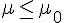 |  |
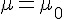 |
| H1 |  |
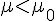 |  |
另外、檢定的對象如果不是平均數 ，而是變異數  ，或者某個比例 p，或者是中位數 M ，那就得改用對應的分布進行檢定，讓我們將檢定的種類與方法整理一下，列表如下：
，或者某個比例 p，或者是中位數 M ，那就得改用對應的分布進行檢定，讓我們將檢定的種類與方法整理一下，列表如下：
- 單組樣本的檢定
- 平均值的檢定？ (
 ) -- 學生 T 檢定
) -- 學生 T 檢定 - 變異數的檢定？ (
 ) -- 卡方
) -- 卡方  檢定
檢定 - 比例 p 的檢定？ ( 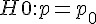 ) -- 常態 Z 檢定
- 中位數 M 的檢定？ (
 ) -- 無母數方法 Wilcoxon Sign-Rank 檢定
) -- 無母數方法 Wilcoxon Sign-Rank 檢定
- 平均值的檢定？ (
- 兩組樣本的檢定
- 比較兩平均數 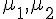 的差值 (
 ) 的檢定
) 的檢定 - 比較兩變異數
 的差值 (
的差值 (  ) 的檢定
) 的檢定 - 比較兩機率 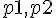 的差值 ( 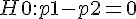 ) 的檢定
- 比較兩組中位數 M 的差值 (
 ) 的檢定 (無母數方法)
) 的檢定 (無母數方法)
- 比較兩平均數 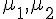 的差值 (
右尾檢定、左尾檢定與雙尾檢定
> x = rnorm(25, mean=5, sd=2)
> x
[1] 6.6148290 8.4660415 4.7084610 8.0959357 5.0618158 3.6971976 7.7887572
[8] 5.2229378 4.7763453 4.3595627 4.7674163 2.8655986 4.5051726 1.2974370
[15] 6.9794643 0.4042951 8.0391053 6.7884780 6.5557084 3.7146943 0.3457576
[22] 7.4302876 6.7216046 9.1046976 7.0879767
> sd(x)
[1] 2.430731
> mean(x)
[1] 5.415983
> t.test(x, alternative="greater", mu=4.8)
One Sample t-test
data: x
t = 1.2671, df = 24, p-value = 0.1086
alternative hypothesis: true mean is greater than 4.8
95 percent confidence interval:
4.584244 Inf
sample estimates:
mean of x
5.415983
> t.test(x, alternative="less", mu=4.8)
One Sample t-test
data: x
t = 1.2671, df = 24, p-value = 0.8914
alternative hypothesis: true mean is less than 4.8
95 percent confidence interval:
-Inf 6.247722
sample estimates:
mean of x
5.415983
> t.test(x, alternative="two.sided", mu=4.8)
One Sample t-test
data: x
t = 1.2671, df = 24, p-value = 0.2173
alternative hypothesis: true mean is not equal to 4.8
95 percent confidence interval:
4.412627 6.419339
sample estimates:
mean of x
5.415983 中位數 M 的檢定
> wilcox.test(x, mu=4.8)
Wilcoxon signed rank test
data: x
V = 207, p-value = 0.2411
alternative hypothesis: true location is not equal to 4.8 變異數 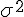 的檢定
> chisq.test(x)
Chi-squared test for given probabilities
data: x
X-squared = 26.1823, df = 24, p-value = 0.344比例 p 的檢定
> prop.test(25, 100, correct=T, p=0.25)
1-sample proportions test without continuity correction
data: 25 out of 100, null probability 0.25
X-squared = 0, df = 1, p-value = 1
alternative hypothesis: true p is not equal to 0.25
95 percent confidence interval:
0.1754521 0.3430446
sample estimates:
p
0.25
> prop.test(25, 100, correct=T, p=0.01)
1-sample proportions test with continuity correction
data: 25 out of 100, null probability 0.01
X-squared = 557.8283, df = 1, p-value < 2.2e-16
alternative hypothesis: true p is not equal to 0.01
95 percent confidence interval:
0.1711755 0.3483841
sample estimates:
p
0.25
Warning message:
In prop.test(25, 100, correct = T, p = 0.01) :
Chi-squared approximation may be incorrect
> prop.test(25, 100, correct=T, p=0.2)
1-sample proportions test with continuity correction
data: 25 out of 100, null probability 0.2
X-squared = 1.2656, df = 1, p-value = 0.2606
alternative hypothesis: true p is not equal to 0.2
95 percent confidence interval:
0.1711755 0.3483841
sample estimates:
p
0.25 兩組樣本的平均值檢定
(方法一)：合併 T 檢定 (pooled T test) -- 又被稱為：「獨立 T 檢定」或「不相關 T 檢定」
- 前提條件：兩組樣本必須互相獨立才能使用合併 T 檢定，沒有理相信 (常態分布) 兩組樣本的母體變異數不相等的情況之下，想比較
 時，可用「合併 T 檢定」。
時，可用「合併 T 檢定」。
> x=rnorm(25, mean=3.0, sd=2)
> y=rnorm(25, mean=3.2, sd=2)
> x
[1] 5.12770813 -0.69201841 3.11359532 1.93715093 7.76880172 3.54159714
[7] 1.47159331 4.27555975 3.48421232 2.25191442 3.46742988 7.85327689
[13] 3.52493667 5.41072190 4.39668469 0.29868134 -0.19521005 1.30992501
[19] 2.55471568 3.89214393 6.01076126 -0.02217834 1.03681457 5.68719430
[25] 4.15852190
> y
[1] 4.0565581 3.9617962 6.3513376 4.9998217 4.4419258 6.3198375
[7] -1.0483622 5.1809845 7.5435307 2.6048084 5.6764663 2.6687181
[13] 2.7981462 -0.3564332 0.8637199 4.2032371 4.5879745 3.1428764
[19] -0.3657162 4.0400208 5.9577457 2.3334531 3.2662193 1.6285190
[25] 2.2731483
> t.test(x, y, var.equal=T) ## (方法一)：合併 T 檢定 (pooled T test) -- 又被稱為：「獨立 T 檢定」或「不相關 T 檢定」
## 前提條件：兩組樣本必須互相獨立才能使用合併 T 檢定，沒有理相信 (常態分布) 兩組樣本的母體變異數不相等的情況之下使用
Two Sample t-test
data: x and y
t = -0.3409, df = 48, p-value = 0.7346
alternative hypothesis: true difference in means is not equal to 0
95 percent confidence interval:
-1.508021 1.070757
sample estimates:
mean of x mean of y
3.266581 3.485213
> t.test(x,y, pair=T) ## (方法二)：成對 T 檢定 (Paired T Test)
## 前提條件：(1) 2個或以上的連續變項皆呈常態分配 (normally distributed)
## (2) 變項與觀察值之間互相獨立 (mutually independently)
Paired t-test
data: x and y
t = -0.3438, df = 24, p-value = 0.734
alternative hypothesis: true difference in means is not equal to 0
95 percent confidence interval:
-1.531134 1.093870
sample estimates:
mean of the differences
-0.218632 兩組樣本的變異數檢定
| 右尾檢定 | 左尾檢定 | 雙尾檢定 | |
|---|---|---|---|
| H0 |  |
|
|
| H1 |  |
 |
 |
> var.test(x,y)
F test to compare two variances
data: x and y
F = 1.0973, num df = 24, denom df = 24, p-value = 0.8219
alternative hypothesis: true ratio of variances is not equal to 1
95 percent confidence interval:
0.4835609 2.4901548
sample estimates:
ratio of variances
1.097334 兩組樣本的比例檢定
| 右尾檢定 | 左尾檢定 | 雙尾檢定 | |
|---|---|---|---|
| H0 |  |
|
|
| H1 |  |
 |
 |
> x=c(100, 200)
> y=c(300, 400)
> prop.test(x,y)
2-sample test for equality of proportions with continuity
correction
data: x out of y
X-squared = 18.7698, df = 1, p-value = 1.475e-05
alternative hypothesis: two.sided
95 percent confidence interval:
-0.24201562 -0.09131771
sample estimates:
prop 1 prop 2
0.3333333 0.5000000 兩組樣本的中位數檢定
(方法一)：Wilcoxon Rank-Sum 檢定：兩組獨立觀察值 X, Y 適用
- 統計量：

- 其中的： 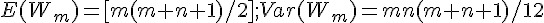
| 右尾檢定 | 左尾檢定 | 雙尾檢定 | |
|---|---|---|---|
| H0 |  |
|
|
| H1 |  |
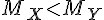 |  |
> x = rnorm(20, mean=5, sd=2)
> y = rnorm(20, mean=5.5, sd=2)
> x
[1] 3.962665 4.592900 2.708658 4.302144 9.140617 6.579571 4.711547 4.842238
[9] 5.634979 8.826325 7.492737 5.349967 6.028533 5.326150 3.280819 2.589442
[17] 6.391175 3.299716 5.681381 3.188571
> y
[1] 7.537479 5.810962 7.340678 4.048306 6.179672 5.152021 6.780724 3.354434
[9] 6.484613 8.752706 4.116139 4.939286 4.074703 2.954187 4.489012 5.697258
[17] 5.260137 6.299990 8.188696 5.743851
> wilcox.test(x, y, exact=F, correct=F)
Wilcoxon rank sum test
data: x and y
W = 162, p-value = 0.304
alternative hypothesis: true location shift is not equal to 0 (方法二)：Wilcoxon Signed-Rank 檢定：兩組成對觀察值 (X, Y) 適用
- 樣本：兩組成對觀察值

- 方法：將差距絕對值 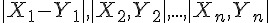 由小到大排序，並給予 1..n 的名次。
- 檢定統計量：看看
 是否夠接近 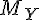 ，如果差很多那麼 W 應該會很大。
是否夠接近 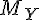 ，如果差很多那麼 W 應該會很大。 - 正排名權重：

- 負排名權重：

- W = min(W_+, |W_-|)
> wilcox.test(x,y, exact=F, correct=F, paired=T)
Wilcoxon signed rank test
data: x and y
V = 83, p-value = 0.4115
alternative hypothesis: true location shift is not equal to 0 結語
在本文中，我們討論了各種「單組樣本」與「兩組樣本」檢定方法，並用 R 軟體進行示範操作，希望透過這樣的方式讓 讀者感受到「檢定」這一個統計工具的用途。
但是、我們還漏掉了一個部分，那就是「三組以上的樣本」之檢定方法，用來檢定這些樣本是否來自同一母體，這種 「多組樣本檢定」的問題，通常必須使用「變異數分析」(ANOVA, Analysis Of Variance) 的方法處理，這將是我們 下一期所要討論的主題，我們下期見！
參考文獻
- 陳鍾誠的網站/免費電子書/R 統計軟體 -- http://ccckmit.wikidot.com/r:main
- 陳鍾誠的網站/免費電子書/機率與統計 (使用 R 軟體) -- http://ccckmit.wikidot.com/st:main